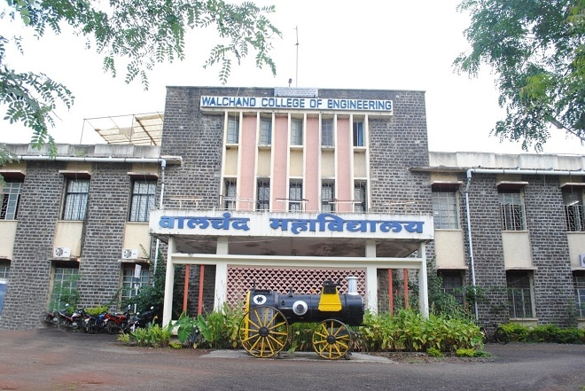

Walchand College Of Engineering,Sangli(WCE)
Dec 4, 2020

Here’s one of the oldest Govt. aided engineering college.It is an autonomous engineering education institute at Sangli,Established in 1947.WCE,affiliated with Shivaji University.Having great rankings and most affordable college.It provides you a good natural infrastructure — an environment where you can evolve yourself.
Walchand College of Engineering Sangli Pros Reviews
1)The Campus and infrastructure :
Campus is beautiful. Unlike other space-deficient colleges in cities, WCE has 100 acres of campus natural environment, isolation
from outside city and awesome weather.
2)Academics :
Well equipped labs and tons of technical as well as non technical events are arranged regularly by clubs in college .Lot of things to
learn well updated along with the ongoing technology,hackathons are conducted to keep students in competition and updated.
3)Hostel & faculties :
Best hostel facilities Good mess, 24 hrs wifi,.Most of senior and experienced faculties the most important thing is SELF STUDY
and It is your responsibility to take advantage of knowledge of these faculties.
4)Placements :
Most admirable thing of college is placements. 100% placements for com & It.This year student got placed in Google,microsoft.
Most top companies visit.Other branches also get placed. Minimum 50 companies visits to college campus with mass recruiters like
Infosys, TCS, Accenture, Atlas, Eaton etc with average package 4 Lakhs/Annum
5)Fests and other acitivities :
Always ahead for social work and extra activities.Student support is large.Main college event is VISION.technical,personal
development,musical etc clubs provide a path for explosure of students.
Walchand College of Engineering Sangli Cons Reviews
As per reviews from WCE students there are not any cons, but 75% attendance is compulsory.
Veermata Jijabai Technological Institute(VJTI)
Dec 4, 2020

Established in 1887.Top most college in Maharashtra.National institute ranking framework.It is ranked 95Th college in India. it was named as victoria jubilee techincal Institute.Later on, it was renamed to it’s current name in 1997.
VJIT College Pros Reviews
1)Faculty :
Faculty are good and very helpful and well qualified.Having PHD and also qualified from IIT colleges .Best knowledgeable staff.
Modgest experienced faculties providing extra knowle
2)Infrastructure :
Wi-Fi,Labs are pretty nice with all needed material, Classrooms, Library facilities are available.the external infrastructure college
is good .Grounds and playing gymkhana are also available.
3)Placements :
Almost everyone from every branch gets placed and average packages goes by around 5-6 lakh. Highest packages are grabbed by
computer,IT, ENTC students.
4)Fee :
somewhat pricey to live in Mumbai but compared to other colleges placements VJTI is much better and surely gives assurance for
jobs and great knowledge.
5)Events :
Department wise multiple students club are there.Arranging different new workshops,familiarity with new and advanced syllabus
keeps the students mind charming and makes them good engineers.
VJIT College cons Reviews
Mumbai city is very expensive that’s the only one cons about VJTI.